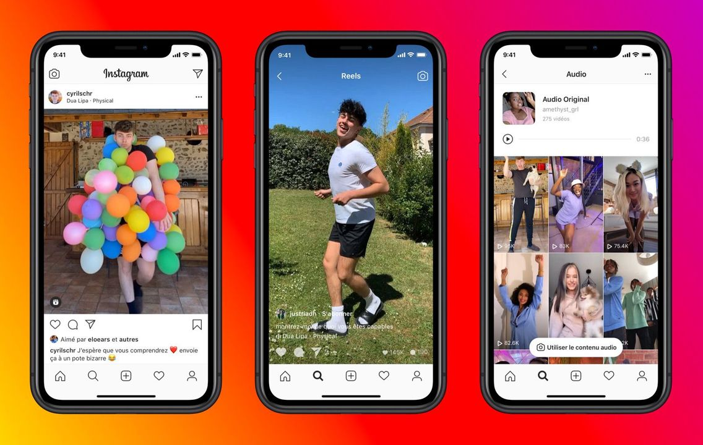
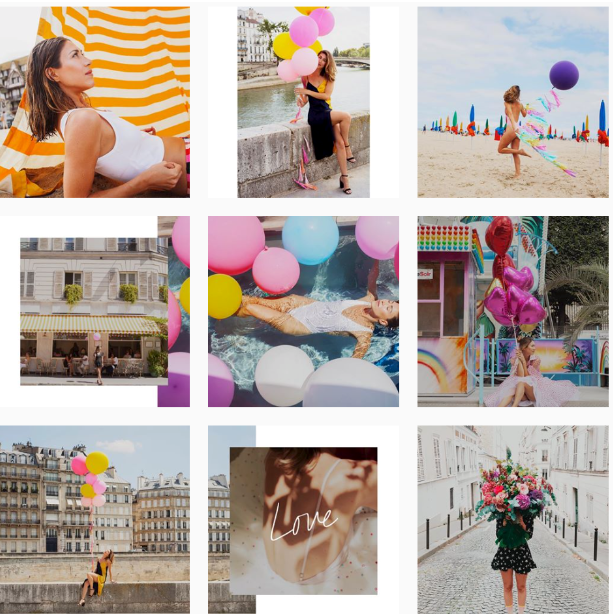
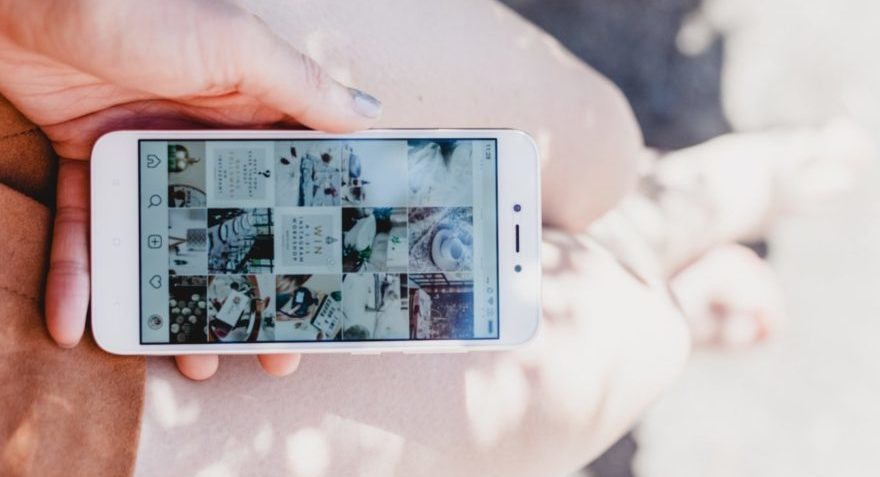

**********En fait, Instagram, c'est quoi?**********
Instagram est une application. Mais c'est aussi un réseau social et une plateforme de partage de photos et de vidéos.
Créée en 2010 par un américain, Kevin Systrom et un brésilien, Mike Krieger, Instagram est maitenant une des applications les plus utilisées au monde.
Elle existe en plus de 25 langues. En 2018, ce réseau social décomptait plus d’un milliard d’utilisateurs dont 400 millions de membres mensuels actifs. Instagram est donc un média social de premier plan. Il est le premier réseau social en France, devant Facebook et Snapchat.


-----Lien pour accéder à Instagram !----
**********Les particularités**********
Ce qui différencie Instagram des autres réseaux sociaux (Pinterest, Snap, Twitter) est principalement le fait de pouvoir publier des vidéos (de moins d’une minute ou sous forme d igtv pour des vidéos plus longues) ou des photos pouvant être retouchées grâce à des filtres. Depuis 2016, Instagram a aussi mis en place un algorithme très complexe, qui change et évolue fréquemment. Il sert à hiérarchiser les publications les plus susceptibles de plaire à l'utilisateur ce qui rend d'autres publications moins visibles.
**********Les points positifs et négatifs**********
Instagram peut avoir beaucoup de points positifs :
*garder contact avec des proches...
*découvrir des cultures, des pays, développer une certaine ouverture d’esprit
*rester informé
*être en contact avec des personnes qui n'habitent pas dans le même pays
*cela peut aussi être un lieu de solidarité
*favoriser les débats
Comme de points négatifs:
*causer du stress, de l’anxiété
*causer un manque de confiance en soi
* causer sensation de solitude pouvant entraîner jusqu’à une dépression
*une plus importante exposition à la haine
*causer du harcèlement
*avoir des effets sur la santé(aussi mentale)
*ne plus profiter du moment présent
*engendrer unes dépendance
*d'après certaines études scientifiques, Instagram serait même décrit comme le pire réseau social pour les jeunes
